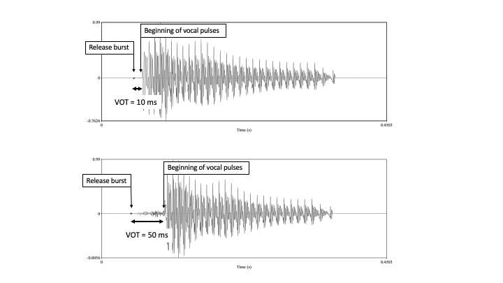
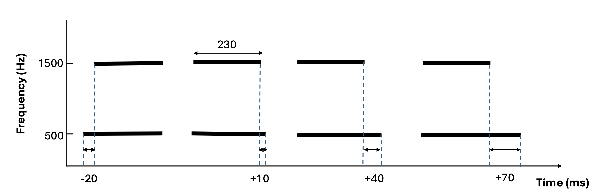
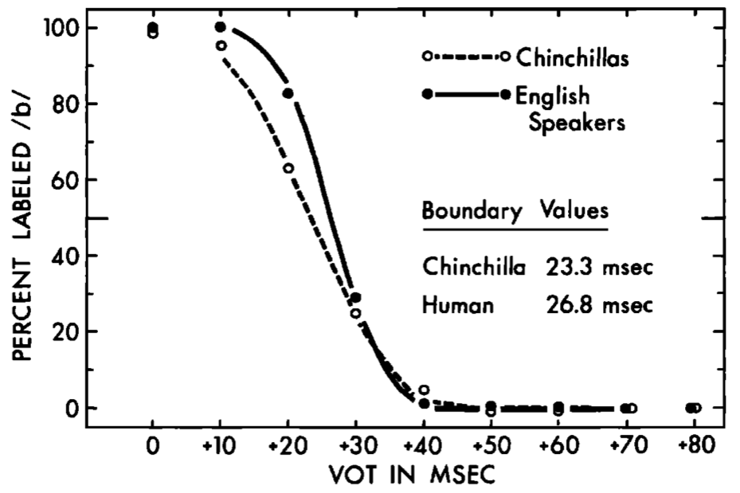
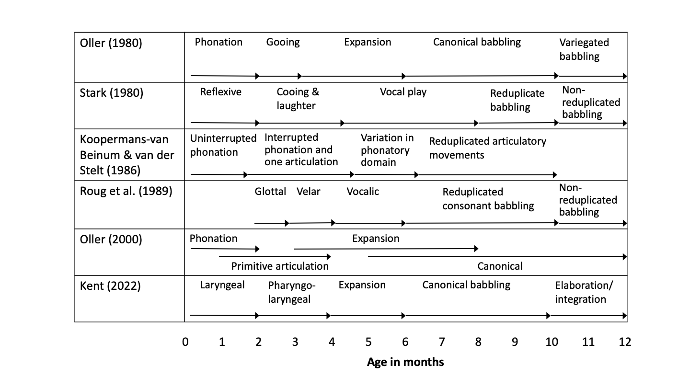
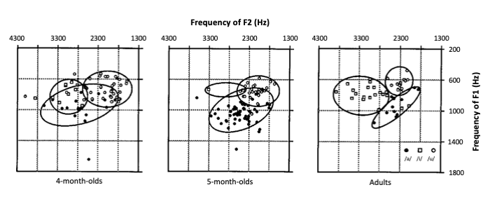
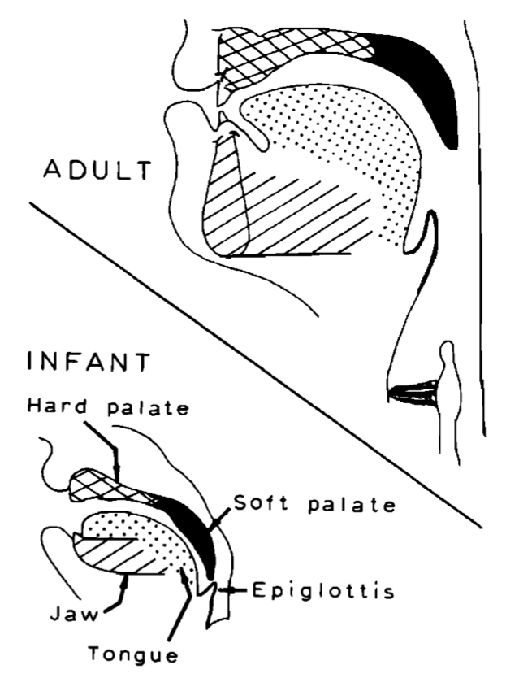
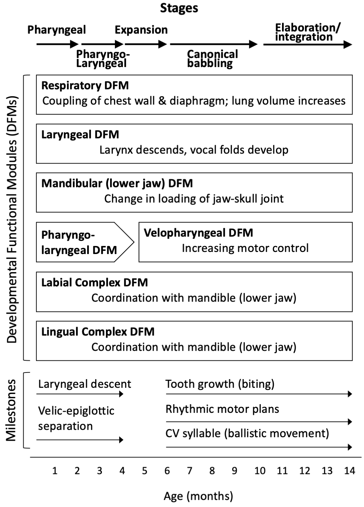

Chapter 3 Initial speech perception and production
3.1 Chapter overview
During the first few months of their lives, infants do not understand or produce words. But that does not mean that they are incapable of processing speech sounds. Far from it, they are perceptually sensitive to a range of acoustic properties that characterize human speech — properties that are critical to the phonological patterns of the language they are beginning to learn. They also undergo anatomical, physiological, and cognitive development that prepare them to produce the sounds of the ambient language. In this chapter, we will learn about these speech perception and production capacities in very young infants.
Understanding infants’ speech capacities at the earliest stage is important for several reasons. By studying how very young infants respond to speech, we will be able to find out what types of relevant phonetic and cognitive abilities they bring to the task. That will tell us what the starting point of phonological acquisition looks like. Some of such initial capacities may turn out to be unique to the way humans process speech, or they may be part of how we process auditory signals generally. Addressing this question will help us gauge the extent to which we are equipped with abilities that specifically enable us to learn human speech and the linguistic patterning that underlies it. By studying infants’ initial speech capacities, we will also gain some key insights into how infants begin to recognize, internalize, and produce the sound patterns of the ambient language(s). What they can do with speech before they know how sounds are patterned in their language reveals the underlying auditory and cognitive resources that they employ as they go on to learn phonology.
3.2 Initial perceptual capacities
3.2.1 Prenatal learning and neonates’ perception of overall prosodic characteristics of language
The conventional wisdom used to be that language learning starts when we are born. But this view has since been revised in light of evidence that, before they are born, babies can hear the speech produced by their mother and also, to some extent, by others speaking nearby (Abrams & Gerhardt, 2000; Hepper & Shahidullah, 1994). In fact, we now know that fetuses can learn certain aspects of recurrent speech they hear in the womb, or in utero (James, 2010). In a striking demonstration of this prenatal capacity, DeCasper et al. (1994) asked French women who were 33 weeks pregnant to recite a particular rhyme three times a day. Half of the mothers read a rhyme called La Poulette and the other half, Le Petit Crapaud. Four weeks later, when the fetuses were 37 weeks old, the experimenters placed a loudspeaker above the mothers’ stomach and played recordings of both La Poulette and Le Petit Crapaud one by one. This time, however, the rhymes were read by an adult female other than the mothers, ensuring that the fetus’s response would be based on the rhymes themselves rather than the voice of the person reading them. The experimenters then monitored the fetuses’ heartbeat rate and discovered that it slowed down when a rhyme was played, but only when it was the same as the one the mother had been reading. Fetuses that had heard La Poulette responded to La Poulette but not to Le Petit Crapaud. Those who had heard Le Petit Crapaud showed the opposite response. The only explanation of this response pattern is that the fetuses recognized some language-related features of the particular rhyme they had heard in the preceding weeks.
If a fetus can remember a rhyme regularly read by the mother, could they be learning more general characteristics of their mother’s language? The answer is yes. When tested a few days after they are born, infants show better ability to discriminate pairs of languages if they have been exposed to one of the languages prenatally. In experiments using the High Amplitude Sucking procedure (see Box 2.1 below for the details of this method), neonates born to French-speaking parents recognize a switch between samples of French and Russian, but those born to non-French speakers fail to notice the difference between those two languages (Mehler et al., 1988).
- Box 2.1: The High Amplitude Sucking (HAS) procedure
- The High Amplitude Sucking (HAS) procedure is an experimental technique that works on the principle that when infants know that their sucking behavior causes them to hear some sound stimuli, they increase their sucking rate in response to a novel stimulus. The infant participant is given a non-nutritive pacifier (dummy) that is connected to a computer, which plays an auditory stimulus whenever the infant’s sucking response meets a certain threshold of amplitude, or strength. During the first phase of the experiment, one type of stimulus (e.g., [ba]) is played in response to such a high-amplitude suck. The sucking rate eventually decreases because the infant becomes less attentive to the same stimulus that is repeated over and over. When the sucking rate decreases by a predetermined percentage (e.g., 20%), a new stimulus (e.g., [pa]) is introduced to the infants assigned to the experimental condition. The other infants, who are the controls, continue to hear the same stimulus played from the beginning ([ba]). If, after the shift in the stimulus, the sucking rates shown by the infants in the experimental condition are higher than those of the infants in the control condition, then we can infer that the infants in the experimental condition detected the change and therefore were able to discriminate the stimuli before and after the shift. The HAS procedure can be used with infants from birth to about 4 months, and it is one of the most commonly used experimental procedures to test speech perception in very young infants.
What is it about their native language that fetuses learn such that they can distinguish it from an unfamiliar language when they are born? While some studies show that fetuses may remember certain characteristics of vowels they hear in utero (Moon et al., 2013), the current consensus is that prenatal learning primarily involves aspects of speech related to prosody, such as stress, intonation, and speech rhythm. This is because the uterine wall and amniotic fluid in the womb dampen the transmission of higher frequencies carrying acoustic information that signals segmental contrasts, making it difficult for the fetus to perceive differences in consonants and in vowels (Querleu et al., 1988). In comparison, speech audible in the womb preserves information in lower frequencies, which includes fundamental frequencies (a key factor in our perception of pitch), changes in amplitude/loudness, and the duration of vocalic elements, all of which are related to prosodic elements of phonology. To verify this hypothesis, some of the language differentiation experiments described above have also been carried out using stimuli that are low-pass filtered. Low-pass filtering is a signal-processing technique that removes auditory sources in the high frequency band, retaining only those under a certain frequency threshold (e.g., 400 Hz). This technique simulates the type of speech the fetus hears in the womb, where high-frequency portions of speech are muted. So what happens to these language-differentiation experiments when low-pass filtered samples are used instead of unmodified speech? The results remain the same. For example, newborns exposed to French prenatally can also discriminate low-pass filtered French and Russian (Mehler et al., 1988). What they remember from their listening experience in the womb, then, must be contained in the low frequency range, where prosodic information is.
🔈To experience what it is like to hear speech in the womb, listen to this sample of low-pass filtered speech.
It should be noted, though, that newborns do not necessarily need prenatal exposure to specific languages in order to discriminate language samples if the two languages are substantially different in the way they sound. For example, neonates born to French speakers can discriminate samples of English and Japanese, or a mixture of English and Dutch utterances contrasted with a mixture of Spanish and Italian utterances. But they do not notice a switch between English and Dutch, or other pairings of those languages (e.g., English and Spanish contrasted with Dutch and Italian) (Nazzi, Floccia, et al., 1998). This must be because languages such as English and Japanese sound more different from each other than a pair like English and Dutch. Again, these results are obtained with low-pass filtered stimuli, showing that the languages are discriminated on the basis of some prosodic differences between them. But this is a different type of ability from prenatal learning. Here, we are saying that in addition to being able to remember certain prosodic features of the language they heard in utero, newborns have the capacity to differentiate languages they have never heard before as long as the languages have distinct prosodic profiles.
In summary, when it comes to the prosodic properties of speech and language, newborns show two types of sensitivities. One is based on what they have heard as a fetus, from which they pick up certain low-frequency information in their mother’s speech, and therefore, something about the prosodic characteristics of the language(s) she speaks. The other type is not a product of such learning, but their inherent ability to detect differences in the overall prosodic characteristics of languages that are distinct enough.
3.2.2 Perceptual sensitivities to phonetic differences
One of the most surprising observations about infants’ initial speech perception is that they are able to discriminate pairs of speech sounds that differ along a single phonetic dimension. This groundbreaking finding was made by Eimas et al. (1971) in the first study to employ the High Amplitude Sucking (HAS) procedure to test infants’ auditory discrimination skills. Eimas et al. (1971) were able to demonstrate that infants as young as one month can detect a change in synthesized stimuli differing in voice onset time (VOT), a phonetic property that signals the difference between voiceless and voiced stops (e.g., [p] vs. [b]). This means that, soon after birth, infants are able to tell apart a pair of auditory stimuli that correspond to a key phonetic contrast found in many languages.
This finding was soon extended to many other speech sound pairs, including consonants differing in place of articulation (e.g., [b] vs. [d], Bertoncini et al. (1988); and [b] vs. [g], Moffitt (1971)), consonants differing in manner of articulation (e.g., [b] vs. [w], Eimas & Miller (1980)), vowels (e.g,. [a] vs. [i] vs. [u], Trehub (1973); [i] vs. [ɪ], Swoboda et al. (1976)), stress patterns (e.g., báda vs. badá, Jusczyk & Thompson (1978)), and pitch contours (e.g., falling vs. rising in /ame/, Nazzi, Bertoncini, et al. (1998)).
Some of these experiments were conducted with infants who were a few months old rather than newborns, which raises the possibility that they had had the opportunity to learn to distinguish the consonants and vowels from similar instances of sounds heard in the language spoken around them. But this does not seem to be the case, because young infants can also discriminate speech sounds that are not contrastive in the language spoken around them. For example, 2-month-olds exposed to Kikuyu (a Bantu language spoken in Kenya) can distinguish [b] and [p] even though the language has only one bilabial stop /b/, and therefore does not contrast /b/ and /p/ (Streeter, 1976). Similarly, young infants exposed only to English can discriminate nasal and oral vowels in French ([ɑ̃] vs. [ɑ]), trilled and palatal fricatives in Czech ([ř] vs. [Ʒ]) (Trehub, 1976), back and front rounded vowels in French ([u] vs. [y]) (Polka & Werker, 1994), retroflex and dental stops in Hindi ([ʈ] vs. [t̪]) and ejective velar and uvular stops in Nlaka’pamux ([k’i] vs. [q’i]) (Werker & Tees, 1984). Again, none of these pairs forms a phonological contrast in the infants’ ambient language (i.e., English), so the infants in these experiments could not have learned to discriminate them by hearing them used as different sounds.
The main conclusion to draw from these studies is that young infants can discern a wide range of phonetic differences that occur in human languages without prior specific language experience. Note that this is not to say that infants are born with a universal set of consonants and vowels attested across languages from which they go on to select the ones that are relevant to the language to be learned. Rather, what these findings show is that when infants are born, they are already sensitive to many dimensions of acoustic differences that are employed in languages to signal contrasts between sound categories. While this does not mean they know the existence of those consonants and vowels as potential phonological units, it shows that they have the capacity to detect acoustic differences that matter to linguistically meaningful contrasts.
3.2.3 Categorical perception
Young infants do more than just discriminate pairs of phonetically different sounds. They often do so as if there were a distinct boundary along the relevant acoustic dimension that differentiates the two sounds. This pattern of discrimination is also found in a perceptual phenomenon that adult listeners exhibit, a phenomenon known as categorical perception (Liberman et al., 1957). Let us look at what categorical perception means, using voice onset time (VOT) as an example. In Chapter 1, we saw Fig. 3.1, which shows waveforms of two syllables with a bilabial closure followed by the vowel [a] with a VOT of 10 ms and 50 ms, respectively. We noted that adult English speakers would perceive these samples as /ba/ and /pa/, respectively, because a VOT of 10 ms corresponds to the English voiced stop /b/ and a VOT of 50 ms corresponds to the voiceless /p/.

Figure 3.1: Waveforms of synthesized speech with a VOT of 10 ms (top) and 50 ms (bottom). Samples were created with a Praat script written by Jessamyn Schertz
What happens when we hear samples of speech like these with VOT values in between? To find out, we can create a continuum of /ba~pa/ stimuli with VOT ranging from, say, 0 to 60 ms in equal steps of 10 ms. When an adult is asked to listen to these tokens and identify them as either /b/ or /p/, we might expect the response rate for /b/ to decrease by regular steps as the VOT increases, as illustrated by Panel A in Fig. 3.2, because the physical difference between each of the samples is exactly the same (10 ms). Similarly, we might expect their ability to discriminate sounds that differ by the same amount, say by 20 ms, to be consistent across the range such that the level of discrimination is the same for 10 vs. 30 ms, 20 vs. 40 ms. and so on. This hypothetical pattern of response is illustrated in Panel B of Fig. 3.2. But that is not how adults respond. Their identification of these stimuli shifts abruptly in the middle as if there were a sharp boundary somewhere between /b/ and /p/ (Fig. 3.2, Panel C). In contrast, their identification does not vary that not much around the two ends of the continuum, as if differences within the category of /b/ or /p/ did not matter. This goes hand in hand with their ability to discriminate pairs of stimuli from this continuum, as shown in Fig. 3.2, Panel D. Adults are much worse at hearing the difference between a pair of VOT stimuli that belong to the same side of the presumed boundary (e.g., 0 vs. 20 ms) than a pair that crosses that boundary (e.g., 20 vs. 40 ms), even though the physical difference between each of the samples is exactly the same (20 ms). The way we identify and discriminate these samples from a continuum shows that we hear them categorically as either /b/ or /p/. This is what we mean when we say speech perception is categorical (Liberman et al., 1957).
![Percentage of /b/ responses in an identification task (Panels A and C) and accuracy in a yes/no discrimination task (Panels B and D) in which adult participants judge whether two tokens are identical or different. Panels A and C show the expected response patterns if the perception of these sounds is non-categorical. Panels B and D show the categorical nature of the response that is observed. The identification function changes abruptly around 30 ms. Discrimination is excellent when the VOT difference spans that area (20 vs 40 ms), but close to chance level on either side of that boundary.](images/catperc.png)
Figure 3.2: Percentage of /b/ responses in an identification task (Panels A and C) and accuracy in a yes/no discrimination task (Panels B and D) in which adult participants judge whether two tokens are identical or different. Panels A and C show the expected response patterns if the perception of these sounds is non-categorical. Panels B and D show the categorical nature of the response that is observed. The identification function changes abruptly around 30 ms. Discrimination is excellent when the VOT difference spans that area (20 vs 40 ms), but close to chance level on either side of that boundary.
🔈 Try this out yourself by listening to this synthesized ba-pa continuum. Play them from the shortest VOT to the longest. Is there a point when it suddenly sounds more like /pa/? Play the 0 ms and 20 ms samples. Then play the 20 ms and 40 ms samples. Which pair sounds more distinctly different from each other?
These response patterns we find in adult speakers of English reflect the fact that voiced and voiceless stops are contrastive sounds in the language, and VOT is a key phonetic dimension of that contrast. But how about very young infants? They have not learned which sounds are meaningfully different from others in their language. Do they therefore not show a perceptual pattern reminiscent of categorical perception, or do they still respond as if there were a boundary between the two sounds they can discriminate? This was the question addressed in the study by Eimas et al. (1971) that we briefly discussed in the previous section. That is, they wanted to find out not just whether 1-month-olds and 4-month-olds can discriminate canonical tokens of [ba] and [pa] but also whether they perceive stimuli with different VOTs “categorically” in the sense that their discrimination shows the pattern illustrated in Fig. 3.2 Panel B. Infants in one condition heard synthesized stimuli like those shown in Fig. 3.1, but with their VOT shifting from 0 to 20 ms or 60 to 80 ms, halfway through the experiment. Infants in another condition heard stimuli with their VOT shifting from 20 to 40 ms VOT. Those in the 20-to-40 ms condition showed an increase in sucking rate when the stimuli’s VOT changed (i.e., they noticed, or discriminated the difference), but the ones in the condition with a 0-to-20 ms or 60-to-80 ms shift did not. This is exactly what we expect if infants have higher sensitivity to a change that straddles a certain point in the acoustic continuum than one that stays on one side of that point, just as adult listeners do in a discrimination task with similar stimuli (see Panel B of Fig. 3.2 for comparison).
This pattern of young infants’ speech perception is extendable to other types of phonetic difference, including those corresponding to place of articulation in stops (e.g., /b/-/g/; Eimas (1974)), stop/glide contrasts (e.g., /b/-/w/; Eimas & Miller (1980)), and liquid contrasts (e.g., /r/-/l/ Eimas (1975)).
There are also indications that this response pattern is not based on prior learning of the relevant contrasts, because it is observed for differences that are not contrastive in the ambient language. Recall that unlike English, Kikuyu does not have a contrast between /b/ and /p/, and yet 2-month-olds exposed to Kikuyu respond to a VOT change from 10 to 40 ms but not to one from 50 to 80 ms, as if the former corresponded to a change in categories but the latter did not (Streeter, 1976). These findings are rather peculiar. It makes sense for adult speakers of English to exhibit categorical perception of VOTs. After all, sounds with a long VOT, like [p], and those with a short VOT, like [b], do belong to different categories that contrast in the language. But the “categorical” perception in young infants is not really about such categories because we see it whether or not the language they are exposed to distinguishes different phonological units along the VOT continuum. So, even though infants and adults show similar patterns of speech discrimination, the source of the categorical nature of the perception has to be different. We will return to this issue in the section on species-specificity.
3.2.4 Perceptual constancy
To understand speech, the listener not only has to discriminate instances of speech sounds that belong to different categories, but also to recognize instances of sounds that belong to the same category. The vowel /i/ (as in ‘beat’) is produced in a different way depending on the person who says it, the words it occurs in, and the position of that word in the sentence and so on, but we can still tell that it is the same vowel and different from, say, /ɪ/ (‘bit’) or /e/ (‘bait’). This process is not as simple as we might think. Consider the case of vowels such as [i] and [a]. These vowels are distinguished by the relative frequencies of their first three formants, but as shown in Table 3.1, the average formant frequencies vary considerably depending on the sex and age of the talker due to differences in the size and shape of the vocal tract. Vowels also carry pitch, the perceived “height” of the voice, that varies in its overall level, direction, and range of change owing to differences in the talker (e.g., adults vs. children), intonational context (e.g., statement vs. question), and emotional state (e.g., excited vs. bored). Despite all this variation, listeners are still able to identify the vowel category. This property of speech perception is known as perceptual constancy.
| Vowel | Formant | Male | Female | Child |
|---|---|---|---|---|
| i | F1 | 3010 | 3310 | 3730 |
| i | F2 | 2290 | 2790 | 3200 |
| i | F3 | 270 | 310 | 370 |
| a | F1 | 2440 | 2810 | 3170 |
| a | F2 | 1090 | 1220 | 1370 |
| a | F3 | 730 | 850 | 1030 |
Perceptual constancy of speech sounds has been found in infants as young as one month of age. In a HAS procedure experiment with 1- to 4-month-olds, Kuhl & Miller (1982) first played tokens of either /i/ or /a/ that varied in pitch contours, and then changed the identity of the vowel. The infants were able to detect the switch even in the face of irrelevant variation in the pitch. In Jusczyk et al. (1992), 1-month-olds first heard tokens of either bug /bʌg/ or dug /dʌg/ produced by six male and six female talkers. When the stimulus was switched to the other word, infants responded with an increase in sucking rate despite the variability among different talkers. In other words, they could tell that bug and dug are different, while ignoring many ways in which the tokens of bug sounded different from each other (and similarly for tokens of dug). Infants who are only a few months old already seem to know what types of acoustic variation are not relevant to phonetic distinctions, and perceive speech sounds that are otherwise different as equivalent in some sense.
3.2.5 Domain specificity of initial speech perceptual capacities
So far we have seen that newborns and very young infants are sensitive to a wide range of acoustic differences employed by human languages to signal contrasts in consonants, vowels and suprasegmentals (e.g., stress and pitch contours); in many cases, they show “categorical” perception and perceptual constancy in processing these acoustic differences. At least some of these abilities seem to be innate, as they are demonstrable regardless of infants’ prior experience.
But what exactly are these abilities? Are they rooted in perceptual mechanisms that are specifically designed to process speech? Or are they part of our general capacity to process auditory stimuli of different kinds, including, but not exclusive to, speech? The kind of capacity that is dedicated to a specific type of stimulus or aspect of cognition is described as being domain-specific, and the kind that applies to many different types of stimuli or cognitive aspects is called domain-general. So the issue we are dealing here is often framed as a question about the domain specificity of initial speech perception. This is a question that has generated a large body of research, only some of which can be reviewed here.
One type of evidence in support of domain-specific or specialized speech processing mechanisms focuses on the way acoustic cues are integrated during the perception of speech. In speech, phonetic contrasts often require different types of acoustic information, which work together to signal the identity of a sound in a specific context. For example, adult listeners can tell whether there is a /t/ sound or not in a pair of words such as say and stay using two acoustic cues (Eimas, 1985). One cue is temporal. There is a longer gap between the fricative sound [s] and the onset of the vocalic portion in stay than in say. The other cue is spectral. The beginning of the first formant (F1) in the vocalic portion is lower in stay than in say. Eimas (1985) played continua of synthesized stimuli for say and stay to 2- to 4-month-olds exposed to English, manipulating the temporal and spectral cues independently. In one continuum, the two types of cues were “cooperating” in the sense that the two cues changed hand in hand in the direction that makes one end sound like say and the other end like stay: the longer the gap, the lower the F1 onset. In the other continuum, each of the two types of cues changed just like in the first continuum, but in opposite (or “conflicting”) directions: the longer the gap, the higher the F1 onset. The infants responded to stimulus changes only in the cooperating continuum. In other words, infants responded to acoustic differences only when they could be integrated to make phonetic sense. Infants’ perception of speech is not simply about detecting any acoustic difference; it is about interpreting the acoustic difference based on what matters to phonetic contrasts.
🔈 Listen to the endpoints of the synthesized continua described above. In both pairs, the two synthesized words differ in the length of the silent gap and the height of F1, but the two cues are cooperating in the first example and conflicting in the second example. The first pair should sound more different (like say and stay) than the second.
Another line of investigation takes advantage of the effects obtained by playing recordings of natural speech backward. Backward speech preserves many global features of natural (forward) speech, such as the ratio and distribution of pauses, the overall height of pitch, and the number and duration of vowels and fricatives. Crucially, however, it disrupts specific properties of speech marked by the directions of changes in pitch and spectral patterns. If infants fail to process backward speech in a task they can perform in forward speech, then they will be showing that the capacities they use rely on such auditory properties that are particular to speech. Indeed, newborns can discriminate samples of speech from typologically different languages (e.g., Dutch vs. Japanese played to newborns exposed to French), but only when the samples are played forward, not backward (Mehler et al., 1988; Ramus et al., 2000). A related finding is that infants show stronger activation of the left side of the brain when they are exposed to forward speech than to backward speech (Dehaene-Lambertz et al., 2002; Peña et al., 2003). The tendency for the left hemisphere to be more involved in speech processing is consistently observed in adults, and is often interpreted as evidence that certain neural structures in that area of the brain are dedicated to the processing of the speech signal (Mazoyer et al., 1993; Perani et al., 1996). That this effect can be observed by contrasting forward and backward speech in neonates and very young infants lends support to the view that humans are born with neural mechanisms specialized in speech processing.
🔈 Just how “speech-like” is backward speech? Listen to this sample.
But not all evidence from auditory experiments in infants points to domain specificity of early speech perception. In fact, some of what is thought to be a telltale sign of speech-specific processing, such as categorical perception, has been demonstrated with non-speech stimuli as well. One example is tone-onset time (TOT). Like its speech analog VOT, a TOT refers to a timing difference between the onset of two auditory events. However, instead of a release burst and vocalization, TOT occurs between two pure tones. In one study, infants between 1 and 3 months of age were exposed to a pair of pure tones, a lower one at 500 Hz and a higher one at 1500 Hz (Jusczyk et al., 1980). The onset of the two tones were manipulated such that the lower tone might start before the higher tone (e.g., with a lead of 10 ms, or a TOT of -10 ms) or after the higher tone (e.g., with a lag of 10 ms, or TOT of +70 ms) (Fig. 3.3). Using the HAS procedure, Jusczyk et al. (1980) showed that young infants can discriminate TOT differences of -70 vs. -40 ms and +40 vs. +70 ms, but no other differences with the same 30 ms interval, such as +10 ms vs. +40 ms or -10 ms vs. +20 ms. This suggests that there are perceptual boundaries of TOT categories somewhere between 40 ms and 70 ms on either side of the high-low tone combination, akin to the VOT boundary between 20 ms and 40 ms implicated in studies such as Eimas et al. (1971). While the precise location of the putative boundaries and the size of the step to induce infants’ responses are different, these results show that infants’ categorical perception of auditory events is not unique to speech stimuli; rather it may be a reflection of a general constraint on our auditory ability to detect differences in temporal order between two acoustic events.

Figure 3.3: Schematic representation of pure tone stimuli with a TOT of -10 ms, +10 ms, +20 ms, and +70 ms.
🔈 Listen to TOT differences created with two pure tones (500 Hz and 1500 Hz) as in Jusczyk et al. (1980). In audio sample A, you will first hear a two-tone sequence in which the higher tone starts 10 ms after the lower tone (i.e., VOT = +10 ms), followed by a sequence in which the higher tone starts 40 ms after the lower one (i.e., VOT = +40 ms). Similarly, the second and third audio samples have pairs of two-tone sequences with TOTs that also differ by 30 ms: (B) -20 ms vs. +10 ms and (C) +40 ms vs. +70 ms. In Jusczyk et al. (1980), the infants responded to a 30-ms TOT difference exemplified in sample C but not that in A or B.
3.2.6 Species specificity of initial perceptual capacities
A question closely related to the domain specificity issue of infants’ speech perception ability is whether the initial capacities are based on auditory or cognitive mechanisms that are unique to humans or those that are shared with other species. In other words, are we born with a species-specific ability to process speech?
This question has been addressed in a number of studies carried out across nonhuman participants, which generally show that many of the basic characteristics of infant speech processing can also be found in other animals. For example, when chinchillas are trained to respond differently to two endpoints of a VOT continuum, 0 ms and 80 ms VOT, and then tested with stimuli ranging from 10 to 70 ms VOT, they show an identification curve that is very similar to that of humans, with a steep shift in response midway, that is consistent with categorical perception (Fig. 3.4) (Kuhl & Miller, 1975, 1978). Similar results that nonhumans categorize speech stimuli in the same way as humans have been obtained for voicing contrasts from macaque monkeys (Kuhl & Meltzoff, 1982) and rhesus monkeys (Waters & Wilson, 1976), and for place-of-articulation contrasts from macaques (Kuhl & Padden, 1983) and Japanese quail (Kluender et al., 1987).

Figure 3.4: Percentage of /b/ responses by chinchilla and adult humans to a VOT continuum simulating /ba/ to /pa/. Source: Kuhl & Padden (1983).
Even the forward-backward speech asymmetry discussed in the previous section has been demonstrated in nonhuman species. Like human newborns, cotton tamarin monkeys can discriminate samples of Dutch and Japanese sentences when they are played forward but not when they are played backward (Ramus et al., 2000). This indicates that the ability to process properties of speech only present in forward speech is not exclusive to humans.
Although these findings suggest that humans are not fundamentally different from some other mammals and birds in the way they process speech, there are some caveats. Human infants show categorical perception of phonetic differences within a few minutes of a laboratory experiment, whereas nonhuman animals often require extensive training, sometimes over many days, before they display perception patterns similar to humans. The results of such training do not always transfer to other relevant contexts; for example, macaque monkeys trained to differentiate /bɑ/ and /dɑ/ cannot generalize that distinction when /b-d/ is followed by a different vowel (Sinnott & Williamson, 1999). There is also evidence that primates are less sensitive to acoustic differences that signal phonetic distinctions such as voicing (Sinnott & Adams, 1987). Taking these similarities and differences between humans and nonhumans into consideration, a reasonable conclusion to draw is that the basic auditory mechanisms that underlie human infants’ processing of speech may be shared with other species. These mechanisms appear to have some natural perceptual “sweet spots” where some differences are inherently more noticeable (for example, the difference between 20 ms and 40 ms VOT), which explains why a response pattern that can be characterized as categorical perception is found in human infants and nonhumans alike. However, human infants clearly apply these mechanisms more readily than nonhumans to speech stimuli and may have a higher level of sensitivity to the relevant acoustic dimensions.
3.2.7 Preference for speech
If the underlying auditory mechanisms that infants employ in speech perception are not unique to humans, why do only human infants go on to acquire more complex properties of speech? Could it be because human infants selectively apply these mechanisms to process auditory signals from speech? Other species, such as birds, also show a disposition to attend to vocalizations from conspecifics (other members of the species) (Marler, 1990). Perhaps humans acquire speech because, like birds selectively listening to calls of their own kind, they pay particular attention to speech signals produced by other humans. If so, we expect neonates to display a preference for listening to speech, as opposed to other types of acoustic signals in the environment.
Studies addressing this question have shown that neonates and young infants indeed prefer to listen to samples of speech over other types of auditory stimuli, such as complex synthetic sounds (Vouloumanos & Werker, 2007a) and a range of naturally occurring sounds, including human-produced sounds without communicative intent (e.g., sniffs, coughs, sneezes), human vocalizations with communicative intent (e.g., laughter, agreement, surprise), and sounds in nature (e.g., water dripping, splashing, or being poured) (Shultz & Vouloumanos, 2010). These results indicate that infants’ preference for human speech is not driven simply by the fact that speech is natural, produced by humans, or intended for communication. Rather, it seems to be based on something more specific about the phonetic characteristics of speech, possibly the particular ways in which acoustic patterns such as formants and fundamental frequencies are combined to generate a rapidly changing sequence of varied sounds (Rosen & Iverson, 2007). Interestingly, it has been shown that neonates display a preference for both human speech and rhesus monkey calls over complex synthetic sounds, and their preference for human speech over monkey calls emerges only over the 3 months following birth (Vouloumanos et al., 2010). If this finding is further supported, it will mean that the listening bias that newborn humans have is geared toward primate vocalization, including, but not limited to, human speech. This preference then narrows and becomes specialized for human speech in the first few months. At this point, we do not fully understand what drives this change in auditory preference, but a similar shift happens in the way young infants perceive faces, which also do not appear to be different for humans and other primates at the beginning (Pascalis et al., 2002), so speech may be part of a more general perceptual narrowing that young infants undergo.
3.2.8 The role of initial perceptual capacities
Let us now think about how these initial capacities can contribute to infants’ language development. The most obvious role they play is in the discovery of sound categories and patterns that are relevant to the phonological system of the language. Neonates’ preference for primate communicative vocalization and, later, more specifically for human speech, drives them to selectively attend to and apply their auditory processing skills to linguistically relevant acoustic signals in the environment. Their sensitivity to phonetically relevant acoustic differences and tendencies toward categorical perception of speech assist them in identifying the phonetic categories and prosodic patterns that constitute the building blocks of the native language phonology. For prosodic aspects of speech, this process appears to begin before infants are born.
But these capacities also provide infants with the potential for learning aspects of language beyond phonological patterns. One such aspect is the identification of words in running speech. Neonates are sensitive to differences in acoustic properties that mark the boundaries between words. For instance, they can discriminate disyllabic sequences such as [mati] that have been extracted from between two French words (e.g., pyjama tissé “woven pajamas”) as opposed to those extracted from within words (e.g., mathématicien “mathematician”) (Christophe et al., 1994). Similarly, newborns’ phonetic capacities may help them classify words into broad syntactic categories. In many languages, words belonging to specific syntactic categories tend to share acoustic and phonological characteristics (Monaghan et al., 2005; Shi et al., 1998). For example, in English, function words such as articles and auxiliaries are typically shorter in vowel duration, weaker in amplitude, and simpler in phonological structure compared to lexical words, such as nouns, verbs, and adjectives. Newborns respond to switches between a list of function words (e.g., the, in, your, we) and a list of lexical words (e.g., toys, great, play, chair) extracted from natural speech (Shi et al., 1999), indicating that they can detect and discriminate these classes of words on the basis of their sound properties alone. Furthermore, 2-month-olds can detect a switch in the order of words between utterances such as “Cats would jump benches” and “Cats jump wood benches” (would and wood are homophones, i.e., they are pronounced the same), indicating that their speech processing abilities can be applied to tracking word order information (Mandel et al., 1996).
The idea that such phonetic sensitivities can be used to learn structural properties of language is known as phonological bootstrapping (or prosodic bootstrapping when the information relied on can be attributed to prosodic properties) (Gleitman & Wanner, 1982; Jusczyk, 1997). In the strongest form of this proposal, newborns are thought to already know the phonological markers of each structural property—such as what a function word or the beginning of a word should sound like—which they can exploit immediately. A more conservative interpretation is that young infants can perceive the relevant phonetic differences but still have to learn how they relate to other linguistic properties before they can use them. Either way, our understanding of initial speech perception capacities suggests that newborns and very young infants are already equipped with phonetic abilities that can facilitate the learning of words and grammar.
3.2.9 Summary: Initial speech perception
Infants learn some language-specific characteristics of the prosodic properties of the maternal language even before they are born. Newborns are equipped with perceptual sensitivities to a wide range of phonetic differences relevant to sound contrasts that are employed in human languages. These abilities are largely broad-based and experience-independent in the sense that they are not specific to or based on their exposure to the ambient language. They also show some characteristics that are similar to the way adults perceive speech, such as categorical perception and perceptual constancy. There is an ongoing debate about which of the basic mechanisms that underlie these perceptual abilities are specifically designed to process speech and whether they are unique to humans. But human infants’ tendency to selectively attend to vocalizations from other humans means they apply them more readily to the processing of speech than other species.
3.3 Initial speech production
3.3.1 Elements of speech production
In the first half year of life, infants’ vocalizations show limited influence of the language(s) around them. In fact, you would struggle to tell what language they are learning just by listening to the sounds they produce. In this respect, initial vocalization is like initial speech perception, which is also predominantly broad-based in the sense that it shows characteristics that apply to language in general but not to the particular languages infants are exposed to (with the exception of prosody, where language-specific perceptual sensitivities exist already at birth). However, unlike speech perception, the basic capacities for which seem to be in place at birth, many key features of speech production emerge after birth and only gradually during the first several months.
Before we look at how this process unfolds, it would be useful to go over a few concepts in speech production that help us understand the underlying mechanisms of the developmental changes. Here, we follow what is known as the source-filter model (Fant, 1960), a widely used framework that identifies two key components in speech production: phonation (the “source”) and articulation (the “filter”).
Phonation refers to the generation of sounds by means of the vocal cords in the larynx. The vibration of the vocal cords is the source of vowel sounds and what differentiates voiced and voiceless sounds. The rate at which the vocal cords are made to vibrate also creates a difference in pitch, a key feature behind several phonological elements, including tone, intonation, and sentence stress. The space between the vocal folds (i.e., glottis) can also be manipulated to produce different types of phonation, or voice quality, such as breathy voice (when the vocal folds are vibrating while the glottis is wide open) and creaky or laryngealized voice (when the vocal folds are shortened such that they can vibrate only on one end of the glottis). In some languages, breathy voice and laryngealized voice are used to signal a phonological contrast against regular, or modal, phonation.
The sound produced by phonation is altered through articulation. In this context, articulation means some manipulation within the vocal tract, the air passage that extends from the larynx to the lips. The shape of the lips and the position of the tongue change the resonance pattern of phonation, including the formants in vowels. The shape, position and movement of the lips, tongue, hard/soft palate, uvula, pharynx, or larynx are the sources of place and manner of articulation in consonants. The opening and closing of the nasal cavity via the soft palate determines whether the sound produced is nasal or not.
Importantly, speech production involves the temporal coordination of phonation and articulation. The alternation between some type of closure and phonation creates structured sound patterns consisting of consonants and vowels that we perceive as syllables. Without such coordination, elements of vocalization that correspond to different types of phonation and articulation would not cohere as speech sounds.
Finally, some infant vocalizations that involve phonation and/or articulation are not considered speech sounds because they do not relate to the critical function of speech, which is to express linguistic forms (Koopmans-van Beinum & van der Stelt, 1986; Oller, 1980). Vocalizations that do not count as speech by this criterion are vegetative sounds, such as coughing, swallowing and burping, which are involuntary sounds produced in relation to bodily functions. Other sounds that are usually not treated as speech are reflexive sounds such as crying and fussing, which are seen as direct expressions of the physical or emotional state of the infant.
3.3.2 Developmental stages of early vocalization
Researchers have long noted that the overall characteristics of vocal production change during the first several months of life, and this process can be described as developmental stages based on the types of sounds that infants produce (vocalization categories, or “protophones” in the terminology of Oller (2000) and Buder et al. (2013)). Some representative stage models are shown in Fig. 3.5 below.

Figure 3.5: Developmental stages of vocal production during the first year
While the details of the proposed stages differ between models, there are some noticeable commonalities in terms of the number and timing of stages proposed. In fact, as Kent (2022) does, we can identify five key stages that recur in most models, roughly corresponding to 0-2 months, 2-4 months, 4-6 months, 6-10 months, and 10 months onwards. Here, we will follow this approach to describing the developmental stages, keeping in mind that the suggested timing is not only an approximation but also a simplification in that the transition from one stage to another is not as clearly delineated as might be suggested from the schematic presentation in Fig. 3.5. We must also recognize that there can be a considerable degree of individual differences between infants with regard to when they display the defining features of each stage.
3.3.2.1 Stage 1: 0-2 months
Infant vocalizations in the first two months or so are dominated by reflexive sounds such as crying, fussing, and coughing (hence the label “Reflexive” in Stark’s (1980) model), as well as vegetative sounds including sucking, swallowing, and burping. One type of sound that emerges during this period with a somewhat speech-like quality is called a quasi-resonant nucleus (Oller, 1980). Quasi-resonant nuclei (or QRNs) are produced with phonation but with limited opening of the oral cavity and incomplete closure of the nasal cavity. As a result, they lack the full range of formants that characterize adult-like vowels, and typically also have a nasal quality. There is not much that can be described as articulation during this period, and for these reasons, this stage is labelled “Phonation” in some models.
3.3.2.2 Stage 2: 2-4 months
This stage is characterized by a type of vocalization known as cooing or gooing. Coos are produced with phonation of various degrees of resonance, often with some loose closure around the soft palate. Because of this closure pattern, cooing sounds as if it involves a velar consonant (i.e., [k], [g]) and a high back vowel (i.e., [u]), an impression that underlies its name. Cooing appears to be voluntary, often produced in response to adult speech (Stark, 1980), and there are signs that its quality is linked to communicative intent. For example, 3-month-olds are more likely to engage in pointing when they produce cooing with greater oral resonance and pitch contour (Masataka, 1995). Coos may be produced in a series punctuated by glottal closures (Koopmans-van Beinum & van der Stelt, 1986; Roug et al., 1989), although the timing coordination of the closure and phonation is not as regular as to make it sound syllable-like. The emergence of cooing means that during this stage, we begin to see a primitive form of articulation, combined with phonation and produced with intent.
🔈 Here is a recording of a 3-month-old producing coos.
3.3.2.3 Stage 3: 4-6 months
This stage is variously called the “expansion stage” Oller (2000), “vocal play” (Stark, 1980), or more descriptively, “variation in phonatory domain”(Koopmans-van Beinum & van der Stelt, 1986), due to the noticeable increase in the range of vocalization types infants produce. It is during this period that infants begin to regularly produce fully resonant nuclei (FRNs), vocalizations with phonation that contain a broad range of formants, similar to vowels produced by adults (Oller, 2000). Alongside FRNs, infants can be heard producing raspberries (trills with bilabial or labiolingual closure), squeals (phonation with extremely high pitch), growls (low-pitch phonation in creaky/laryngealized voice), yells (phonation with accentuated amplitude), clicks (Wermke et al., 2013), and ingressive-egressive sequences (vocalizations with the airstream alternately flowing inwards and outwards) (Wermke et al., 2018). This expansion in vocalizations can be seen as a sign of development over control of phonation and articulation types.
3.3.2.4 Stages 4-5: 6 months and later
Some time between 5 and 7 months of age, infants—typically quite abruptly—begin producing a type of vocal production known as babbling (Koopmans-van Beinum & van der Stelt, 1986; Oller, 2000; Roug et al., 1989). Babbling refers to a sequence consisting of a closure in the oral cavity and a fully resonant nucleus. The timing of the closure and the phonation is coordinated such that they give a distinct impression of an adult-like syllable. Most stage models identify two stages of babbling. The earlier stage is dominated by canonical babbling in which the closure-phonation combination occurs in isolation (e.g., [ba]) or as a repeated sequence (e.g., [bababa]), the latter known as reduplicated babbling. The later stage is when we also hear a sequence with varied closures, called variegated babbling (e.g., [badiga]). As suggested by the transcribed examples in the preceding sentences, to an adult ear, babbling not only sounds as if it has syllable-like rhythm but also consonants, because the closure frequently involves the lips and the tongue with a fairly controlled occlusion of the oral cavity. In this respect, although babbling is not an attempt to produce words, it marks the beginning of vocalizations that carry many of the key qualities of speech production. A more detailed discussion of babbling, especially its relationship to word production and the influence of the ambient phonological system, will be given in Chapter 3.
🔈 Here is a recording of a 6-month-old producing babbling.
3.3.3 The emergence of phonetic properties in early vocalization
The developmental stages that we have reviewed in the section above are based on descriptions of vocalization types that infants typically produce at various ages. But what do these stages tell us about how infants acquire aspects of speech production that relate to crucial phonetic and phonological properties, such as the production of vowels and consonants, manipulation of pitch, and coordination of syllables? To understand that process, it will be useful to see how findings related to the development of phonation and articulation are linked to phonetic/phonological phenomena. The results of this type of analysis are summarized in Table 3.2, which presents a rough timetable of when the control over various phonatory and articulatory parameters emerges during the first 6 months. The details of the table are discussed in the sections below.
| Age | Phonation | Articulation | Relevant phonetic/phonological phenomena |
|---|---|---|---|
| 2-3 months | Ability to interrupt phonation | Vocalic nucleus in a syllable | |
| 4-5 months | Production of vocalic sounds with different formant characteristics | Vowel contrasts | |
| 4-5 months | Ability to control pitch | Tone and intonation | |
| 4-5 months | Expansion of oral closure types (e.g. raspberries, clicks) | Consonantal contrasts | |
| 6-7 months | Temporal coordination with articulation | Temporal coordination with phonation | Syllables |
| 6-7 months | Complete oral closures | Stops |
3.3.3.1 Phonation
An important step in the development of speech is the ability to interrupt phonation, a prerequisite for producing syllable-like units. This seems to occur around 2 to 3 months when infants begin to coo (Koopmans-van Beinum & van der Stelt, 1986). By 3 months, the bulk of vocalizations that infants produce have a duration of 400 ms or less, which is similar to that of an average syllable in adult speech (Kent & Murray, 1982). A more syllable-like rhythmic coordination of phonation with consonant-like closure begins to occur a few months later, at the onset of babbling (Holmgren et al., 1986; Roug et al., 1989).
A range of voice qualities can be identified in the earliest vocalizations, including modal and larygealized/creaky voice (Buder et al., 2019; Esling et al., 2019; Oller, 1980; Robb et al., 2020). Nonetheless, there is no indication that infants show control of these phonation types before they start babbling. Esling et al. (2019) compared the voice quality of vocalizations produced by infants exposed to English and Bai (a Sino-Tibetan language spoken primarily in Yunnan province, China). Laryngeal/creaky voice and modal voice represent phonemically different sounds in Bai but not in English, so we expect to see a difference in the distribution of these sounds as infants learning Bai begin to manipulate them in response to the contrastive nature of the two phonation types. However, Esling et al. (2019) found little difference between the two groups in the first few months during which phonation was overwhelmingly laryngealized in both languages. Crosslinguistic differences gradually emerge over the next several months, but it was not until the end of the first year that clear differences in voice quality types could be found between English and Bai.
Infants have been observed to produce vocalizations that match the pitch contour of the preceding maternal utterance as early as 2 months (Papoušek & Papoušek, 1989). But such matching can be due to maternal propensities to model their infants’ vocalization characteristics. More clear signs that infants gain independent control over the use of pitch come from the appearance of high-pitch squeals and low-pitch growls during the vocal play stage around the age of 4 to 5 months. This is consistent with evidence that some infants of this age are able to imitate a rise-fall intonational contour modeled by an adult speaker in an experimental context (Kuhl & Padden, 1982).
3.3.3.2 Articulation: vowels
In the early months, vowel-like vocalizations tend to have resonant characteristics that are similar to adult vowels that are produced with the tongue in the mid-to-low front region of the articulatory space (e.g., [ɪ, ɛ, æ, ə]) (Kent & Murray, 1982). Because the first formant (F1) is higher in low vowels than high vowels, and the second formant (F2) is higher in front vowels than in back vowels, when the F1 and F2 values of early vocalic productions are plotted, they both tend to fall on the higher ends of the formant values typically carried by adult vowels (Fig. 3.6).
![Typical region of vowels produced by 3- to 5-month-olds in a vowel space defined by the first (F1) and second (F2) formants. Typical F1/F2 values for English vowels produced by adults and older children are shown in gray for comparison. Source: @kuhl1996. Here and in other such diagrams, the directions of axes have been modified in order to match the acoustic space with the articulatory space, in which the left side of the figure represents the front side of the mouth. 'Front-Back' on the x-axis and 'High-Low' on the y-axis refer to the tongue position](images/infant_vowel_inverted.png)
Figure 3.6: Typical region of vowels produced by 3- to 5-month-olds in a vowel space defined by the first (F1) and second (F2) formants. Typical F1/F2 values for English vowels produced by adults and older children are shown in gray for comparison. Source: Kuhl & Meltzoff (1996). Here and in other such diagrams, the directions of axes have been modified in order to match the acoustic space with the articulatory space, in which the left side of the figure represents the front side of the mouth. ‘Front-Back’ on the x-axis and ‘High-Low’ on the y-axis refer to the tongue position
As we will see below, this tendency to produce vowels in the low front regions of the vowel space is largely a consequence of the vocal tract anatomy of the young infant. However, this does not mean that infants do not differentiate vowel productions before the age of 5 months. Kuhl & Meltzoff (1996) analyzed English-exposed infants’ vocalizations in response to video recordings of an adult speaker producing the vowels /a/, /i/, and /u/. The vowels produced by the infants became more separated in vowel space from 3 to 5 months (Fig. 3.7). This shows that, by 4 to 5 months, infants become able to produce vowels that differ in formant characteristics, at least when they are prompted with acoustic and visual cues.

Figure 3.7: F1 and F2 values of vowels produced by 3-month-olds in response to /a/, /i/, and /u/ models of adult speech (left panel), 4-month-olds (center panel), and 5-month-olds (right panel). Source: Kuhl & Meltzoff (1996). Directions of axes have been modified in order to match the acoustic space with the articulatory space, in which the left side of the figure represents the front side of the mouth.
3.3.3.3 Articulation: consonant
When there is any type of closure in vocalization by infants in the first few months, it tends to be in the area below the oral cavity, in the pharynx or larynx (Grenon et al., 2007; Holmgren et al., 1986; Irwin, 1947). One estimate shows closures produced by infants between 1 and 3 months are predominantly in this area across languages (English: 76%, Moroccan Arabic: 84%, Bai: 81%) (Grenon et al., 2007). The first sign of a consonant-like articulation in the oral cavity is the velar-colored closure heard in coos, but this type of modulation does not appear to be fully under the infant’s control. More controlled oral articulation emerges during the vocal play stage in the form of raspberries and clicks. Based on phonetic transcription of vocalizations produced by Swedish-learning infants, Holmgren et al. (1986) identified a sudden increase in the proportion of oral articulation around 30 weeks (or 7 months), which was primarily produced as part of babbling, and with labial or dental closures. Most of these were complete closures and stop-like, whereas incomplete fricative-like closures only appeared 5 to 10 weeks later. It should be noted, however, that the proportion of vocalizations with closures that are identifiable as consonant-like remains low during the first half year of life. Even at 7 months, such vocalizations only account for about a quarter of what infants produce, and those that contain more than one consonant-like closure are much fewer (Mitchell & Kent, 1990).
3.3.4 Factors in speech production development
The overall description of infants’ vocalizations above reveals an interesting contrast between speech perception and speech production in the first 6 months. From birth, infants demonstrate general abilities to perceive acoustic differences relevant to speech and often in a manner that resembles phonetic perception in adult listeners. By contrast, newborns do not produce speech-like vocalizations, and the key properties that define speech production—manipulation of phonation and articulation—emerge only gradually, culminating in what can be considered the first stage of speech-like production, babbling, toward the end of the first half year. There are several factors that contribute to this relatively protracted development of speech production capacity in young infants.
3.3.4.1 Anatomical change
One of the most important determinants of the early vocalizations is the anatomical features of the vocal apparatus of the infant. As illustrated by Fig. 3.8, there are a number of structural differences between the infant’s and adult’s vocal tract (Vorperian et al., 1999; Vorperian et al., 2005). Compared to adults, young infants have a shorter vocal tract with a more gradual bend. The tongue is relatively large in size in relation to the oral cavity and tends to be in contact with the back of the mouth. The larynx is positioned higher and the pharyngeal space is smaller. The epiglottis rests against the soft palate, causing the airflow from the larynx to escape through the nasal cavity. Furthermore, the vocal folds are shorter and the muscles that control them are still in development.

Figure 3.8: Anatomical differences between infants and adults. Source: Kent & Murray (1982).
In theory, none of these structural differences should prevent young infants from producing adult-like vowels or some consonantal sounds. Nonetheless, they make it easier to produce the types of sounds that are often heard in early vocalizations. For example, the combination of a relatively short pharyngeal component of the vocal tract (due to a higher position of the larynx) and the tendency for the tongue to be in a resting position predisposes formants to pattern with those of low and front vowels (Ménard et al., 2004). The nasal quality and velar-like closure that characterize cooing can be attributed to the proximity between the epiglottis and the soft palate and between the tongue body and the palatal-pharyngeal area, respectively. The structural constraints on the maneuvering of the glottis and tongue limit the range of phonatory and articulatory modifications available to the infant. The infant vocal tract, however, undergoes significant restructuring from 3 months onwards (Kent & Murray, 1982). The larynx begins to descend, the epiglottis moves away from the soft palate, and the tongue becomes smaller in size relative to the oral cavity, allowing the infant to manipulate phonation and articulation more freely.
3.3.4.2 Motor development
Speech is a product of an extremely complex motor system that involves more than 100 muscles. Unlike those in other parts of the body, the muscles that move the jaw, tongue, palate, and larynx contain a wide range of fiber types that are specifically designed to achieve fast speed movement while resisting fatigue (Kent, 2004). Some of these are quite unique in structure and function. For example, the tongue consists of a highly complex three-dimensional network of muscles that is capable of forming a sturdy structure as well as freely extending and contracting. Not surprisingly, learning how to control each of these components, let alone coordinate their movements, is a nontrivial task that can take time (Kent, 1992).
Several observations support the view that the development of speech during early infancy is constrained by motor learning. B. L. Davis & MacNeilage (1995) show that the combinations of consonant-like closure and vowel-like phonation found in babbling are biased toward alveolar/front vowel and labial/central vowel sequences. In these sequences, the position of the tongue remains largely unchanged (e.g., the tongue position for an alveolar contact is close to that for front vowel articulation). The interpretation offered by B. L. Davis & MacNeilage (1995) is that these sequences follow from jaw action alone rather than the independent combination of consonant-like and vowel-like gestures. In other words, they are products of least-effort motoric movements.
There is also evidence that the emergence of babbling coincides with the appearance of a number of other repetitive movements involving not only parts of the vocal apparatus such as the jaw (Roug et al., 1989) but also other parts of the body such as the limbs, fingers and torso (Iverson & Fagan, 2004), a pattern that has been termed rhythmic stereotypies (Thelen, 1981). This suggests that at least some aspects of speech production development are part of more general development for repetitive motor movements.
3.3.4.3 Perception-production link
In order to produce speech-like sounds, infants need to know how the vocalizations they produce are related to the speech sounds they hear in the ambient language. This means that mastery of speech production is dependent on the understanding of the link between perception and production, or proprioception.
There are indications that, at least by 4 months, infants have gained some understanding of the basic relationship between motor patterns and their auditory output. This was first demonstrated by Kuhl & Meltzoff (1984), who presented 4-month-olds with two video recordings side-by-side of a woman producing the vowels /a/ and /i/, accompanied by an audio replay of just one of the vowels. The infants looked longer at the video that matched the vowel that was played, showing their recognition of the correspondence between the perceived sound and the visual cues to the relevant articulatory movement, that is, the shape of the mouth associated with vowels. Furthermore, 4-month-olds are more likely to imitate mouth movements of adult faces in video recordings when the face matches the audio stimulus than when it does not (Kuhl & Meltzoff, 1984; Patterson & Werker, 1999).
Beyond these findings, our knowledge of initial perception-production linking abilities is still somewhat limited. First, we know much less about whether younger infants understand how the sounds they can perceive are produced. Infants’ tendency to look longer at face movements that match vowel articulation has been observed in 2-month-olds (Patterson & Werker, 2003) and imitation of vowel articulatory gestures has been reported for neonates (Coulon et al., 2013), but not all studies have been able to confirm neonatal imitation of articulatory movements (J. Davis et al., 2021). Second, the available evidence for perception-production linking is largely constrained to articulation patterns that are visible (e.g., lip shape and jaw opening). In contrast, we know very little about how and when infants link the perception and production of sound contrasts that are not as visually observable (e.g., voiced vs. voiceless, oral vs. nasal, nonlabial stops vs. fricatives). Because proprioceptual associations for such contrasts must be established largely on the basis of gestural exploration, they are likely to lag behind those for visible contrasts, such as labial consonants and vowels.
It is worth noting here that not all aspects of speech production development are exclusively dependent on auditory perception. Although later in timing compared to hearing infants, deaf infants also produce babble sounds (Oller & Eilers, 1988). Compared to that in hearing infants, babbling in deaf infants contains a higher proportion of labials, nasals, and fricatives (Stoel-Gammon, 1988). These are sounds that have either visual cues (labials) or tactile and kinesthetic cues (nasals and fricatives), perceptual information that deaf children have access to. These observations suggest that, although the typical development of speech production crucially involves auditory perception of speech, infants’ inherent drive to link speech-related gestures with perceptual experience is multimodal.
3.3.5 Theoretical models of early vocal development
While the factors discussed in the previous section explain different aspects of early vocal development, there have also been attempts to provide coherent theoretical models that integrate many of these observations and accounts. Here, we will briefly review two such models.
3.3.5.1 Frame/Content theory
The Frame/Content theory is a model of speech and language production based on the idea that the development of vocal production is closely linked to the way speech evolved in humans (MacNeilage & Davis (1990), MacNeilage (1998)). According to the Frame/Content theory, speech evolved from the rhythmic opening and closing of the jaw for digestive purposes (e.g., chewing, sucking and licking), which became the basis of the close/open mouth alternation of the canonical consonant-vowel syllable structure. Due to this evolutionary process, human speech is biomechanically defined by two key components: the “Frame”, the pendulum-like cyclic movement of the jaw (or the mandibular oscillator) that provides a skeletal syllable structure, and the “Content”, controlled movements of other articulators such as the tongue and lips that fill in the Frame to yield contrasts in consonants and vowels. Because of its more basic biomechanical status, the Frame develops first in infants. Canonical babbling marks the onset of the Frame when consonant and vowel-like alternations are produced by the cyclic opening-closing of the jaw, accompanied by phonation. Variegated babbling emerges when infants gain control over other articulators to add different types of Content to the Frame. The precise nature of the Content is acquired in the years to follow through the proprioceptual mapping of the consonants and vowels children hear in the ambient language onto their own production of these segments.
The Frame/Content theory provides a coherent account of how babbling emerges and transitions into variegated babbling. Its biomechanical characterization of the onset of the canonical babbling is supported by the observation that other rhythmic behaviors appear around the same time (see Section 3.3.4.2). The idea that infants first gain control of jaw opening before they master articulation involving other articulators is consistent with several findings about the combination of consonant-like and vowel-like elements in babbling. As mentioned earlier, there is a tendency for a closure that involves a particular configuration of the tongue or lips to be followed by a vocalic sound that can be produced without changing the position of the articulator (e.g., [d] is often followed by [i], both produced with the tongue in the alveolar region). When different vowels are produced in variegated babbling, they differ more commonly by vowel height (e.g.,[dædi]), which can result from different degrees of jaw opening, than do backness (e.g., [dædu]), which involves different positions of the tongue. In other words, sound sequences in babbling does not require as controlled movements of the tongue and lips as that of the jaw. The strength of the Frame/Content theory lies in its ability to link these developmental phenomena through a physio-motor account based on an evolutionary perspective.
3.3.5.2 Developmental Functional Modules
Kent (2021) and Kent (2022) present a theory of Developmental Functional Modules, which aims to explain why infants produce certain types of vocalizations within a particular stage of development and what gives rise to the succession of stages described in many models. The central idea of the theory is that vocalization stages are products of gradual maturational changes in sets of anatomical features that are spatially and physiologically interconnected. As shown in Table 3.3, these sets, termed Developmental Functional Modules (or DFMs), are different combinations of anatomical structures with specific functions.
| Respiratory | Laryngeal | Mandibular | Lingual complex | Labial complex | Velo-pharyngeal | Pharyngo-laryngeal | |
|---|---|---|---|---|---|---|---|
| Diaphragm and chest wall | x | ||||||
| Larynx | x | x | x | ||||
| Hyoid | x | x | x | x | x | ||
| Mandible | x | x | |||||
| Tongue | x | x | |||||
| Lips | x | ||||||
| Facial muscles | x | ||||||
| Soft palate | x | ||||||
| Pharyngeal constrictors | x | x | |||||
| x |
Each of the DFMs undergoes maturational changes, some of which are marked by major developmental milestones. For example, the lowering of the larynx and the separation of the velum and the epiglottis that occur in the first four months (see Fig. 3.8) enable the soft palate and pharynx to function independently of the larynx and the tongue. As a result, the pharyngo-laryngeal DFM is replaced by the velopharyngeal DFM. However, most of the changes that happen in each DFM are gradual in nature, without any specific point at which its function transforms suddenly. Despite this, the interplay between the gradually developing DFMs can cause a change in vocalization patterns that can be perceived as a qualitative transition from one static stage to the next. The details of this relationship between changes in the DFMs and the developmental stages can be schematically summarized in Fig. 3.9.

Figure 3.9: Changes in Developmental Functional Modules and stages of vocal production. Adapted from Kent (2022)
We see here, for example, that the transition to the pharyngo-laryngeal stage (which corresponds to the cooing/gooing stage in other models) is not triggered by any specific event in the DFMs. Rather, the infant’s control of the respiratory, laryngeal, mandibular, labial, and lingual DFMs is increasing incrementally, and the combination of those aspects of development allows the infant to voluntarily produce phonation accompanied by some closure in the oral cavity. At the same time, this closure happens largely in the pharyngeal and laryngeal area because the larynx has not completely descended, and the velum and epiglottis are not yet separated, contributing to the “cooing” quality of vocalization that typifies this phase in development. In this way, the DFM framework provides a principled account of developmental changes in early vocalizations by integrating a large body of findings about the anatomical and motor-related development that infants undergo during the first year of life.
3.3.6 Summary: Initial vocalization and the emergence of speech production
Although key features of speech perception emerge early, the fundamental elements of speech production are not present at birth and develop only slowly during the first six months. They occur first in the form of somewhat controlled phonation, followed by an expansion of articulatory manipulation and syllable-like temporal coordination of phonation and articulation in babbling, when consonant- and vowel-like sounds can be heard. This timing gap in the development of speech perception and production can be attributed to a number of factors, including the anatomical constraints on young infants’ vocal tract, the need for development in motor control, and the development of proprioception, which builds on infants’ understanding of the link between perceived speech sounds and articulatory and phonatory movements.
3.4 Further readings and resources
- The role of prenatal experience in early speech perception: Gervain (2018) offers a useful summary on the topic.
- Early infant speech perception: Chapter 3 of Jusczyk (1997) presents a detailed discussion of early research on infant speech perception. Eimas et al. (1971) is considered a landmark study in modern research on infant speech acquisition for its methodological innovation, conceptual implications, and impact on much of the experimental work on infant language development that followed. On the experience-independent nature of infant phonetic discrimination, see Streeter (1976) and Werker & Tees (1984).
- Domain specificity and species specificity of speech perception: Jusczyk et al. (1980) is a representative study that presents some evidence for the domain-general nature of infant speech perception. Kuhl & Miller (1975) is one of the first studies to demonstrate that nonhuman species show “categorical” perception effects.
- Infants’ preference for speech: For a comprehensive review of the literature and meta-analysis, see Issard et al. (2023).
- Early vocalization: Oller (2000) is a book-length treatment of the topic. Roug et al. (1989) and Koopmans-van Beinum & van der Stelt (1986) are representative studies that model the development of speech-like abilities in the first half year. Buder et al. (2013) is an attempt to catalog early vocalization categories.
- The role of anatomical development on early vocalization: Kent & Murray (1982) is a classic study.
- Frame/Content theory: The outline of the theory is presented in MacNeilage (1998).
- Developmental Functional Modules: The outline of this theory is presented in Kent (2022).
- Samples of early vocalizations: When reading about early vocalizations, it is often helpful to listen to some representative samples. The CHILDES website offers audio recordings of how children sound between 3 and 36 months. The 3- and 6-month samples are typical examples of cooing and babbling, respectively.
3.5 Discussion questions
- Infants show sensitivities to language-specific characteristics of the ambient language’s prosodic properties before its segmental properties. Can this be solely due to the prenatal availability of prosodic information, or can there be other potential contributors to this difference?
- Vouloumanos & Werker (2007a) conducted an experiment to test whether newborns prefer to listen to speech over non-speech. For this, they used the High-Amplitude Sucking procedure to measure neonates’ responses to a sample of speech (a made-up word repeated three times) and a non-speech analog that was synthesized to have the same acoustic profiles as the speech sample. The infants showed a preference for the speech sample. Listen to the speech and non-speech stimuli they used and discuss the following issues: A) What acoustic differences do you think the infants were responding to? B) Do you think those differences capture what is special about speech (as opposed to other types of sounds a newborn may encounter)? C) [This question is for those who have some background in acoustic phonetics.] Read a critique of the study by Rosen & Iverson (2007) and a response from Vouloumanos & Werker (2007b). Does reading this exchange change your answer to Question B?
- During cooing, infants’ vocalizations often involve some constriction around the soft palate. But when infants start to babble, most consonant-like sounds appear to have closures involving the lips and the alveolar ridge. What are some plausible explanations for this difference?
- Does it make sense to state that human infants are born with most (if not all) sound categories found in the world’s languages? Why?